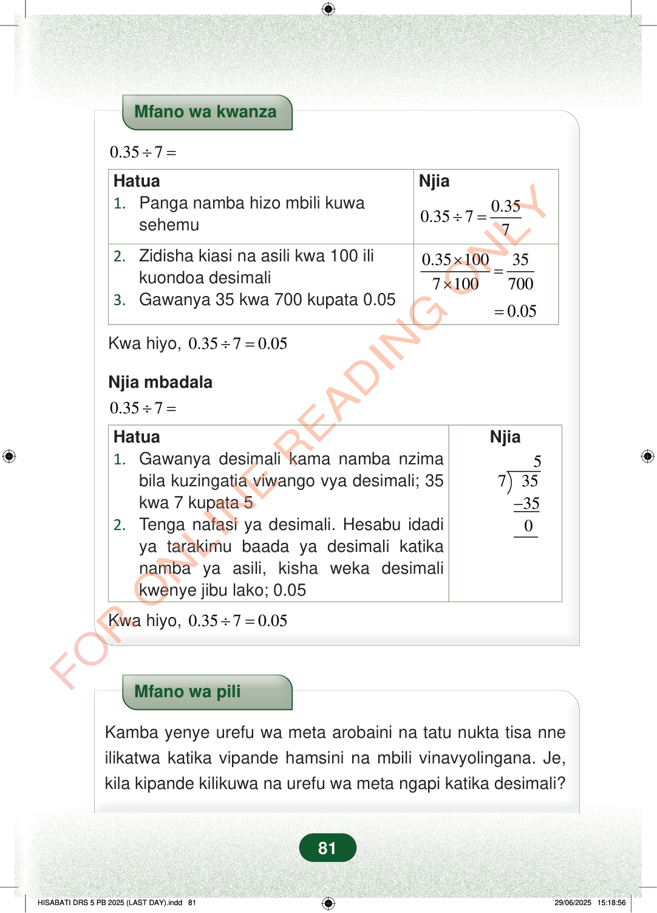

Mfano wa kwanza0.357÷=NjiaHatua1.Panga namba hizo mbili kuwasehemu0.350.3577÷=0.35100357100700×=×2.Zidisha kiasi na asili kwa 100 ilikuondoa desimali3.Gawanya 35 kwa 700 kupata 0.050.05=Kwa hiyo,0.3570.05÷=Njia mbadala0.357÷=Njia5735350−Hatua1.Gawanya desimali kama namba nzimabila kuzingatia viwango vya desimali; 35kwa 7 kupata 52.Tenga nafasi ya desimali. Hesabu idadiya tarakimu baada ya desimali katikanamba ya asili, kisha weka desimalikwenye jibu lako; 0.05Kwa hiyo,0.3570.05÷=Mfano wa piliKamba yenye urefu wa meta arobaini na tatu nukta tisa nneilikatwa katika vipande hamsini na mbili vinavyolingana. Je,kila kipande kilikuwa na urefu wa meta ngapi katika desimali?81
Mfano wa kwanza
0.35 7 ÷ =
Njia
Hatua 1. Panga namba hizo mbili kuwa sehemu
0.35 0.35 7 7 ÷ =
0.35 100 35 7 100 700 × = ×
2. Zidisha kiasi na asili kwa 100 ili kuondoa desimali 3. Gawanya 35 kwa 700 kupata 0.05
0.05 = Kwa hiyo, 0.35 7 0.05 ÷ =
Njia mbadala
0.35 7 ÷ =
Njia
5 7 35 35 0 −
Hatua 1. Gawanya desimali kama namba nzima bila kuzingatia viwango vya desimali; 35 kwa 7 kupata 5 2. Tenga nafasi ya desimali. Hesabu idadi ya tarakimu baada ya desimali katika namba ya asili, kisha weka desimali kwenye jibu lako; 0.05
Kwa hiyo, 0.35 7 0.05 ÷ =
Mfano wa pili
Kamba yenye urefu wa meta arobaini na tatu nukta tisa nne ilikatwa katika vipande hamsini na mbili vinavyolingana. Je, kila kipande kilikuwa na urefu wa meta ngapi katika desimali?
81
Mfano wa kwanza<math><mrow><mn>0.35</mn><mo>÷</mo><mn>7</mn><mo>=</mo></mrow></math>HatuaNjia1.Panga namba hizo mbili kuwa sehemu2.Zidisha kiasi na asili kwa 100 ili kuondoa desimali3.Gawanya 35 kwa 700 kupata 0.05<math><mrow><mn>0.35</mn><mo>÷</mo><mn>7</mn><mo>=</mo><mfrac><mn>0.35</mn><mn>7</mn></mfrac></mrow></math><math><mrow><mfrac><mrow><mn>0.35</mn><mo>×</mo><mn>100</mn></mrow><mrow><mn>7</mn><mo>×</mo><mn>100</mn></mrow></mfrac><mo>=</mo><mfrac><mn>35</mn><mn>700</mn></mfrac></mrow></math>= 0.05<math><mrow><mrow><mrow><mi mathvariant="normal">K</mi><mspace></mspace></mrow><mrow><mi mathvariant="normal">w</mi><mspace></mspace></mrow><mrow><mi mathvariant="normal">a</mi><mspace></mspace></mrow><mtext> </mtext><mrow><mi mathvariant="normal">h</mi><mspace></mspace></mrow><mrow><mi mathvariant="normal">i</mi><mspace></mspace></mrow><mrow><mi mathvariant="normal">y</mi><mspace></mspace></mrow><mrow><mi mathvariant="normal">o</mi><mspace></mspace></mrow><mo separator="true" lspace="0em" rspace="0em">,</mo></mrow><mtext> </mtext><mn>0.35</mn><mo>÷</mo><mn>7</mn><mo>=</mo><mn>0.05</mn></mrow></math>Njia mbadala<math><mrow><mn>0.35</mn><mo>÷</mo><mn>7</mn><mo>=</mo></mrow></math>HatuaNjia1.Gawanya desimali kama namba nzima bila kuzingatia viwango vya desimali; 35 kwa 7 kupata 52.Tenga nafasi ya desimali.Hesabu idadi ya tarakimu baada ya desimali katika namba ya asili, kisha weka desimali kwenye jibu lako; 0.05\begin{array}{r}5\\7\ )\ 35\\-35\\0\end{array}<math><mrow><mrow><mrow><mi mathvariant="normal">K</mi><mspace></mspace></mrow><mrow><mi mathvariant="normal">w</mi><mspace></mspace></mrow><mrow><mi mathvariant="normal">a</mi><mspace></mspace></mrow><mtext> </mtext><mrow><mi mathvariant="normal">h</mi><mspace></mspace></mrow><mrow><mi mathvariant="normal">i</mi><mspace></mspace></mrow><mrow><mi mathvariant="normal">y</mi><mspace></mspace></mrow><mrow><mi mathvariant="normal">o</mi><mspace></mspace></mrow><mo separator="true" lspace="0em" rspace="0em">,</mo></mrow><mtext> </mtext><mn>0.35</mn><mo>÷</mo><mn>7</mn><mo>=</mo><mn>0.05</mn></mrow></math>Mfano wa piliKamba yenye urefu wa meta arobaini na tatu nukta tisa nne ilikatwa katika vipande hamsini na mbili vinavyolingana.Je, kila kipande kilikuwa na urefu wa meta ngapi katika desimali?